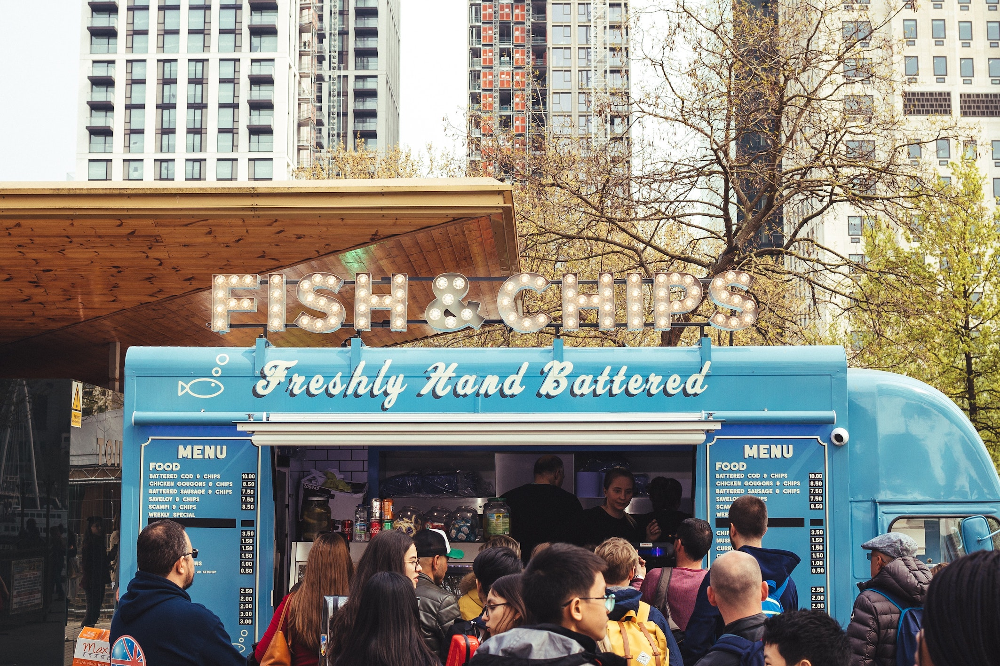
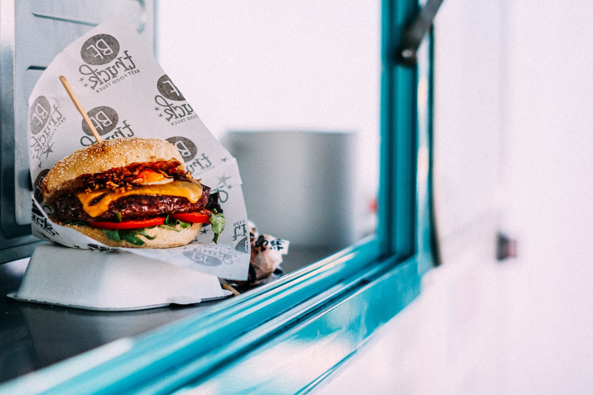
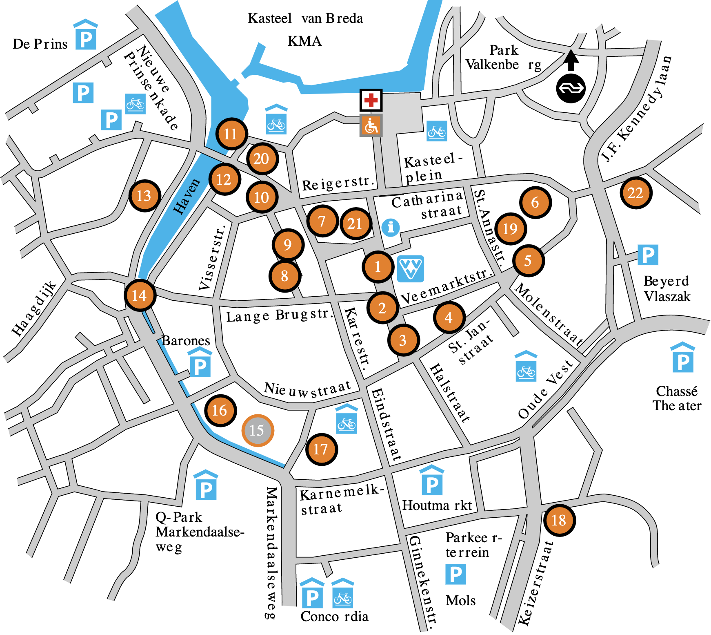

This year's artists
Foodtrucks
The range of delicious food at the Breda Tunes festival is very large. Fish lovers and meat lovers can go here. Are you a vegetarian? No problem! We also have delicious dishes that you can get from various food trucks.
The Fish and Chips food truck is known for its delicious dishes. A real pearl on the Breda Tunes site. You don't know it yet? Believe us, this is definitely worth a try!
The Jazz Map
Tom is 23 years old, the youngest Jazz Artist at Breda Tunes. He is known for his fantastic performances with the saxophone. Nobody can do that the way Tom can.
LINE UP
The line up of this special edition in 2021 will remain a secret for a while. But, a special edition also comes with a special line-up! We can already reveal that Berry Summer, Tom West, Alex Jackson and Sunny Simons will be there.
When you know these four artists, you can no longer pass up the tickets ... can you?
See you there!